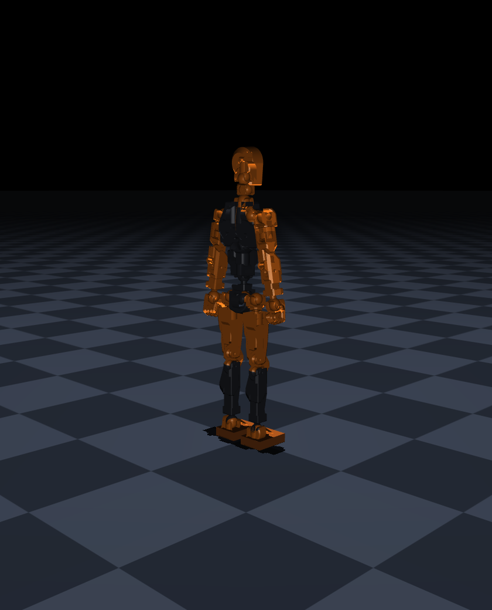
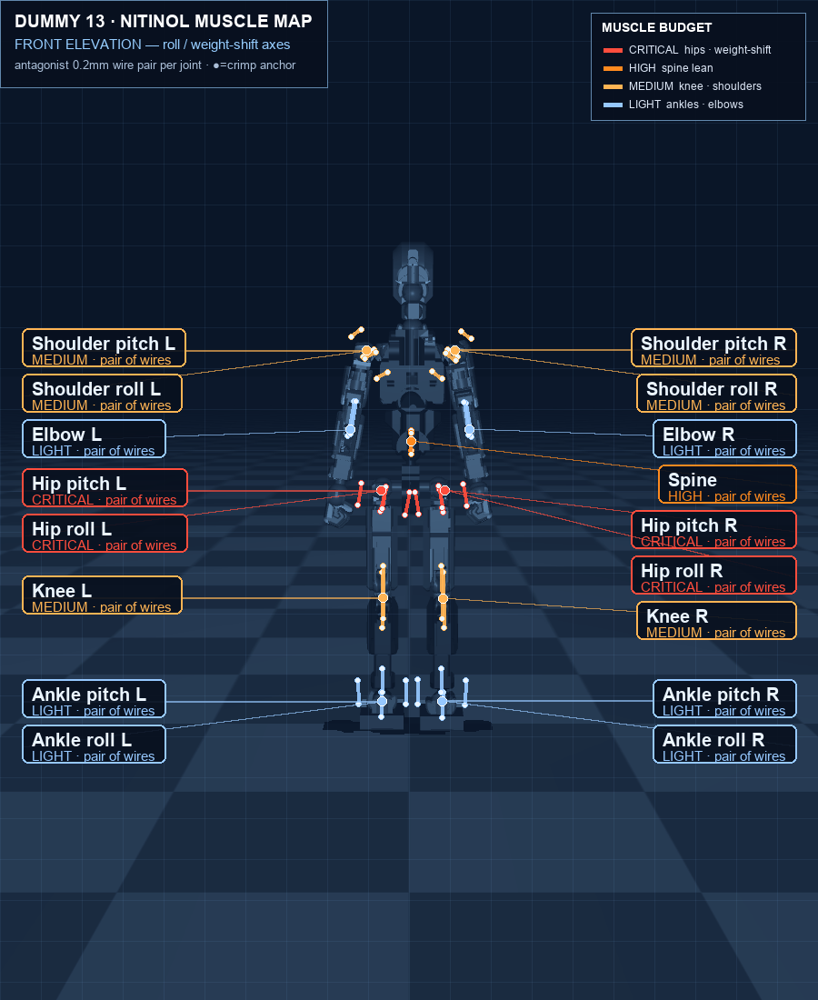
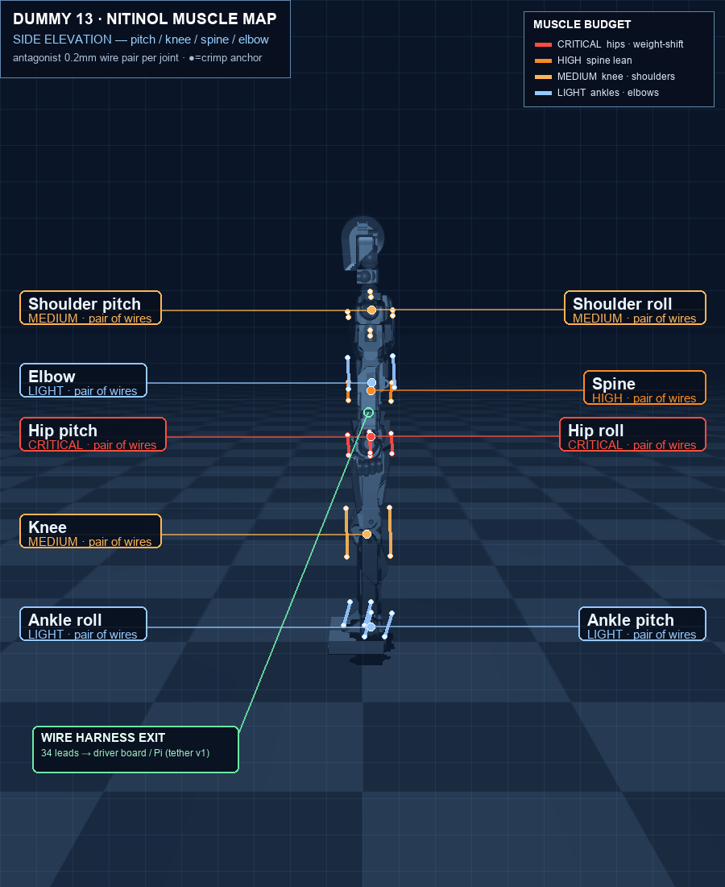
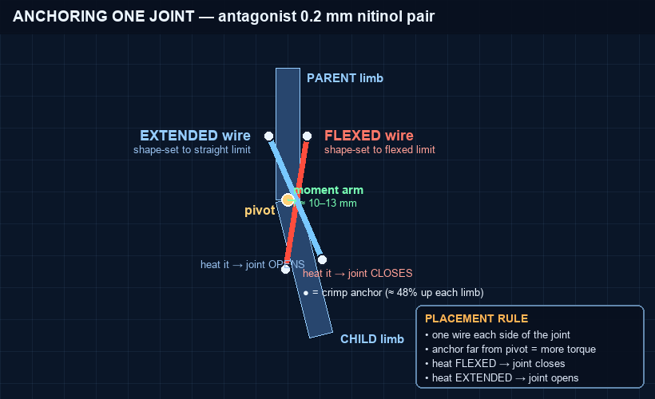

An 8-inch (20 cm), ~70-gram printed humanoid that walks on nitinol shape-memory muscle — the wire is the joint. This is the placement blueprint: every one of the 17 powered joints, both wires of each antagonist pair, where to anchor them, and which driver channel each lead plugs into — taken straight from the simulated model that learned to walk.

Each dot is a real joint position from the model. Across every joint sits an antagonist pair of 0.2 mm nitinol wires (the two coloured lines), offset to either side at the joint's moment arm. Colour = how much work that joint does in the walk, so you know where to spend your best wire and anchoring effort.


Every joint is built the same way. Two pre-shaped wires, one per side, each crimped to the limb above and the limb below. This is the detail behind every dot in the blueprint.

Crimp each wire to the parent limb ~48% up and the child limb ~48% down. The crimp is both the mechanical anchor and the electrical terminal (nitinol won't solder).
Torque = force × moment arm. Anchor as far from the pivot as the frame allows (~10–13 mm). That's what turns a 5.6 N wire into enough torque to move a hip.
The antagonists sit on opposite faces of the joint, kept apart with Kapton/ceramic so they never short. Together they push and pull the joint through its whole range.
Each joint needs two MOSFET channels — one per wire. The channel order below
matches the policy's output order exactly, so output act[i] drives joint
row i: positive heats its flexed channel,
negative heats its extended channel. Wire your harness in
this order and the firmware mapping is trivial.
| # | Joint | Flexed wire | Extended wire | Priority | Build note |
|---|---|---|---|---|---|
| 0 | Hip pitch L | CH 1 | CH 2 | CRITICAL | step length — heavy load |
| 1 | Hip roll L | CH 3 | CH 4 | CRITICAL | weight-shift — strongest |
| 2 | Knee L | CH 5 | CH 6 | MEDIUM | lift swing foot |
| 3 | Ankle pitch L | CH 7 | CH 8 | LIGHT | keep foot flat |
| 4 | Ankle roll L | CH 9 | CH 10 | LIGHT | lateral trim |
| 5 | Hip pitch R | CH 11 | CH 12 | CRITICAL | step length — heavy load |
| 6 | Hip roll R | CH 13 | CH 14 | CRITICAL | weight-shift — strongest |
| 7 | Knee R | CH 15 | CH 16 | MEDIUM | lift swing foot |
| 8 | Ankle pitch R | CH 17 | CH 18 | LIGHT | keep foot flat |
| 9 | Ankle roll R | CH 19 | CH 20 | LIGHT | lateral trim |
| 10 | Spine pitch | CH 21 | CH 22 | HIGH | torso lean — give it power |
| 11 | Shoulder pitch L | CH 23 | CH 24 | MEDIUM | counter-balance |
| 12 | Shoulder roll L | CH 25 | CH 26 | MEDIUM | counter-balance |
| 13 | Elbow L | CH 27 | CH 28 | LIGHT | nearly idle — thin wire ok |
| 14 | Shoulder pitch R | CH 29 | CH 30 | MEDIUM | counter-balance |
| 15 | Shoulder roll R | CH 31 | CH 32 | MEDIUM | counter-balance |
| 16 | Elbow R | CH 33 | CH 34 | LIGHT | nearly idle — thin wire ok |
| Item | Notes |
|---|---|
| Dummy 13 frame + armor | soozafone's files (CC-BY), PLA/PETG. Lengthen the feet (Step 1). |
| Filament | ~150 g; PETG near wires for heat tolerance |
| Pins / elastic cord | for the ball-socket joints per the original design |
| Item | Notes |
|---|---|
| 0.2 mm Flexinol | ~5.6 N pull; ~3–4 m total for 34 wires + spares |
| Micro crimp ferrules | ~70 — terminate & wire each end (no soldering) |
| Kapton / ceramic beads | insulate the antagonist crossings |
| Item | Notes |
|---|---|
| XIAO ESP32-S3 Sense | brain + driver in one (~3 g). Runs the policy on-board, dual-core; OV2640 camera = future vision |
| PCA9685 ×3 | I²C 16-ch PWM expanders → 48 gate channels (the XIAO has too few GPIO for 34) |
| IMU (e.g. MPU-6050) | torso orientation, on the same I²C bus |
| Logic-level MOSFETs ×34 | ≥3 A, VGS(th)<2.5 V (e.g. AO3400); one per wire |
| Gate 100 Ω + pulldown 10 kΩ | per channel — off = cold = safe |
| Buck converter | battery → 3.3–5 V muscle rail |
| Item | Notes |
|---|---|
| 2S LiPo, high-C | 500–1000 mAh; muscle current is peaky |
| Blower / fan ×1–2 | sets cool-down → sets gait speed. Not optional. |
| Current sense (opt.) | watchdog a muscle that's held on too long |
Print soozafone's Dummy 13 as designed, with one change the sim proved is decisive.
Walking distance is set by foot length, front-to-back — not width. The stock foot (~1.8 cm wide × 1.8 cm long) fails: it tips within a second. Extending to ~2.5 cm long (a small toe + heel) unlocked the full ~2 m walk.
| Joint | Travel | Joint | Travel |
|---|---|---|---|
| Hip pitch | −55…+65° | Knee | −120…0° (back only) |
| Hip roll | −35…+35° | Elbow | 0…+120° (forward only) |
| Shoulder pitch | −65…+55° | Ankle pitch | −45…+25° |
| Shoulder roll | −35…+35° | Ankle roll | −20…+20° |
| Spine pitch | −15…+40° | ||
Out of the bag nitinol remembers being straight. You re-teach each wire its shape by holding it in the target pose and heat-treating — this is what makes the wire be the joint. Per the wiring map, you'll set two shapes per joint: one to the flexed limit, one to the extended limit.
Work joint by joint, following the front/side blueprint for position and the anchor detail for method. For each joint:
Land all 34 leads on the driver board in the channel-map order. The XIAO streams duty values over I²C to the PCA9685 expanders; each PCA9685 output drives one low-side MOSFET, one MOSFET per wire:
XIAO ESP32-S3 ──I²C──► PCA9685 ×3 ──PWM──► 34 MOSFET gates
muscle_rail (+) ──[ nitinol wire ]──┬── MOSFET drain
│
PCA9685 PWM ──[100Ω]── gate source ── GND
└──[10kΩ]── GND # pulldown: off = cold = safe
The wire is the heater, so every muscle's two crimps are also its two terminals: that's 68 conductors running along the limbs back to the lower-back harness. They aren't free — they add mass, and any wire crossing a joint fights that joint's slow muscle. Route them so they cost as little as possible:
Load the trained policy (next section), start it on a test stand with the fan running, then on the floor. Expect to tune the two joints that dominate — hip roll (weight-shift amplitude) and hip pitch (step length) — first.
The gait is a deliberate static one: wide stance → shift weight fully over one foot → lift & swing the other → plant → shift back. Slow is correct; the cadence is capped by how fast the wires cool.
All 34 leads gather at the lower back / pelvis (the green callout on the side blueprint) and leave as a single thin ribbon. That keeps wire mass centered and low, and gives one clean tether exit.
The PCA9685 driver board, buck, LiPo and fan sit beside the robot. The ~3 g XIAO can ride on the torso or stay off-board too. The ribbon and a fan hose are the only things attached — get it walking like this before chasing a backpack.
That ribbon + fan hose is a real tether. For flat walking, dress it out the back so it trails behind. For the climbing tasks it matters more: a cord dangling in front will snag the very ledge it's climbing — suspend it from above (a light boom over the rig) so it stays slack and out of the workspace, or move power on-board first.
The walk is a neural-network policy (PPO) trained in simulation — not hand-coded. It reads the robot's pose and outputs, per joint, how hot to make each wire. It's a tiny MLP, so it runs comfortably on-board the XIAO — no Pi required. Use the dual cores: pin the deterministic 50 Hz control loop to one, leave the other for sensing (and, later, vision).
# CORE 0 — control loop (~50 Hz, deterministic) while walking: obs = read_state() # IMU + joint feedback + each wire's heat estimate act = policy(obs) # 17 values in [-1,+1] — TFLite-Micro / ESP-NN for i, a in enumerate(act): duty[flexed_ch[i]] = clamp(+a) # +a heats the FLEXED channel duty[extended_ch[i]] = clamp(-a) # -a heats the EXTENDED channel i2c_write(pca9685, duty) # 34 channels over I²C — a few hundred bytes sleep(0.02)
read_state().
Start open-loop with the feedforward gait, add feedback if it drifts.mujoco/models/dummy13_sma_far_plates.zip.
Export to ONNX → convert to a TFLite-Micro flatbuffer for the XIAO.# watch exactly what the policy commands first (on a desktop): cd mujoco && mjpython play.py --sma # red wires = heating, grey = cool